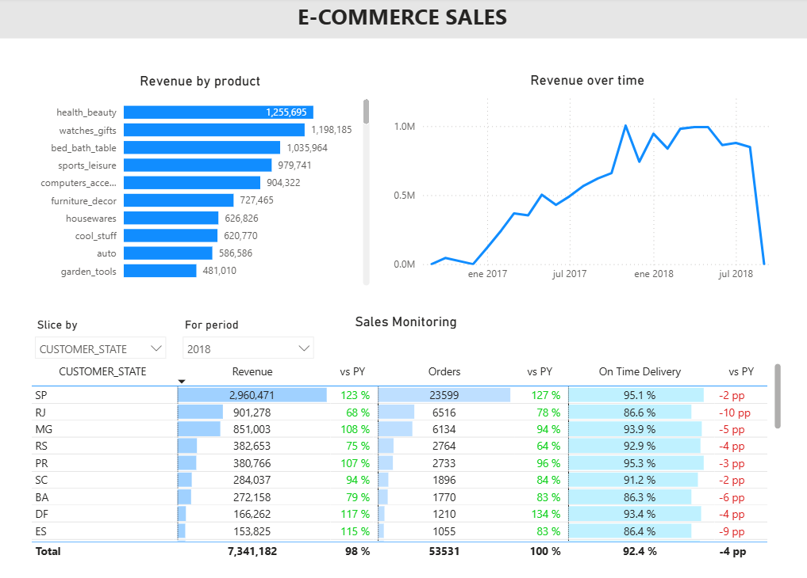
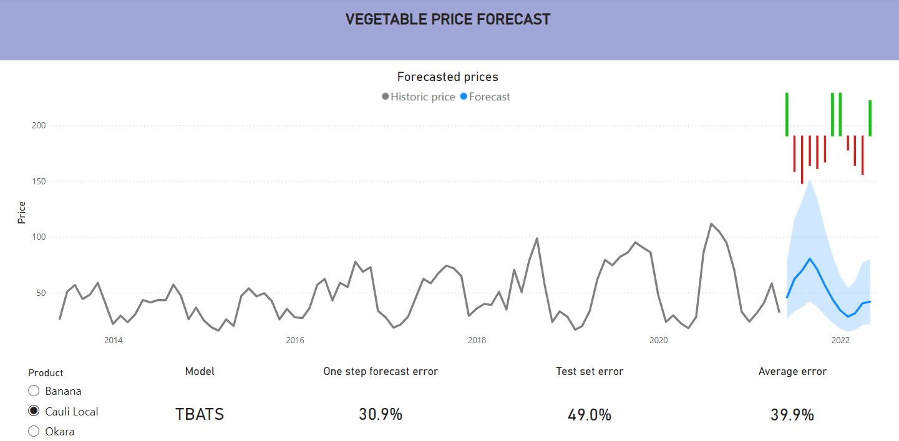
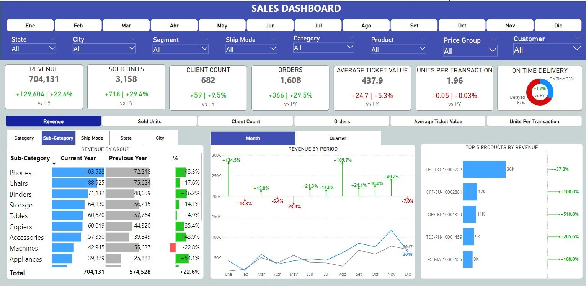
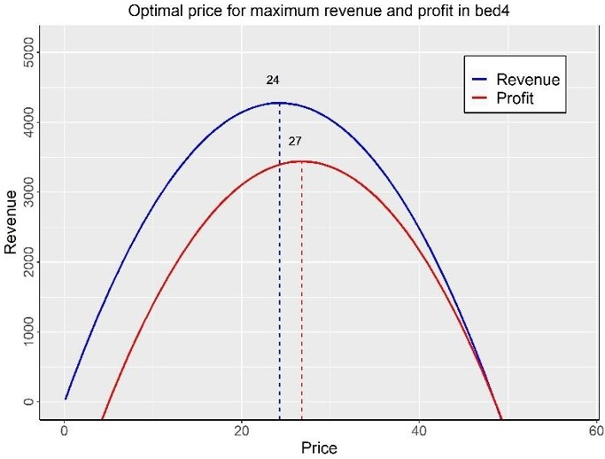
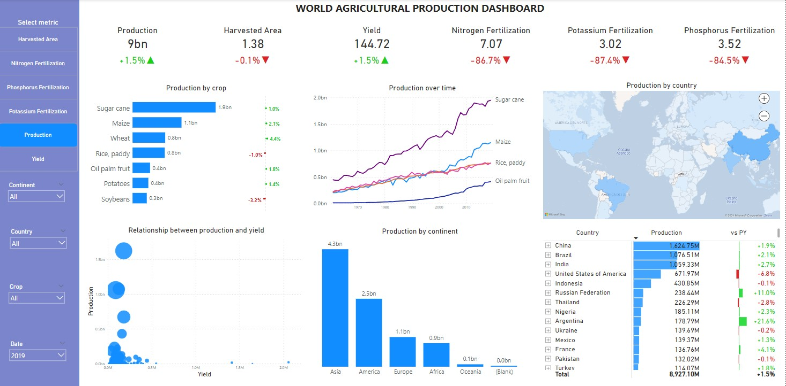
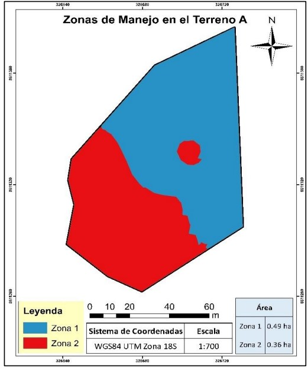

Built a production-grade analytics engineering pipeline and cloud data warehouse for scalable e-commerce analytics.
Developed an end-to-end ELT pipeline using Azure Data Lake, Snowflake, dbt, and Prefect, transforming raw data into a star schema semantic layer (marts) with dimensional modeling.
Implemented incremental models and data quality testing in dbt, and delivered business-ready insights through a Power BI dashboard for sales monitoring and decision-making.

Built an automated forecasting pipeline to predict vegetable prices using multiple time series models in R (ARIMA, ETS, TBATS), selecting the best model based on accuracy metrics.
Forecasts are integrated into an interactive Power BI dashboard, enabling price trend analysis and supporting data-driven commercial decisions.

Developed an interactive Power BI dashboard to analyze sales performance across products, regions, and customer segments.
The solution enables identification of key trends, performance gaps, and growth opportunities through a star schema data model and DAX-based KPIs.

Built a pricing optimization system using Generalized Linear Models (GLMs) in R to estimate demand and price elasticity across products.
The solution identifies optimal price points that maximize revenue and profit, providing data-driven pricing strategies for commercial decision-making.

Developed a complete analytics solution to evaluate global agricultural production by integrating multi-source data into a SQL database for exploratory analysis and predicting crop yields using regression models in R.
Insights are delivered through an interactive Power BI dashboard, enabling identification of production trends and supporting data-driven planning and decision-making.

Developed a geospatial analytics workflow to segment agricultural land into homogeneous management zones using geostatistics, PCA and multiple clustering techniques in R.
The approach identifies spatial patterns in soil properties, enabling more efficient resource allocation and improved agricultural productivity.